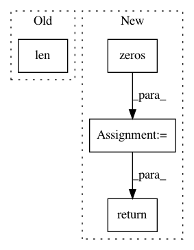

77b1d527138ea2385284ed8eae8322c589065d3f,texar/agents/seq_pg_agent.py,SeqPGAgent,_train_policy,#SeqPGAgent#Any#,108
Before Change
discount_factor = self._hparams.discount_factor
qvalues = list(self._rewards)
for i in range(len(qvalues) - 2, -1, -1):
qvalues[i] += discount_factor * qvalues[i + 1]
q_mean = np.mean(qvalues)
After Change
qvalues = np.expand_dims(qvalues, -1)
max_seq_length = self._samples_py.shape[1]
if max_seq_length > 1:
prefix = np.zeros(
[qvalues.shape[0], max_seq_length-1], dtype=qvalues.dtype)
qvalues = np.concatenate([prefix, qvalues])
for i in range(max_seq_length - 2, -1, -1):
qvalues[:, i] += discount_factor * qvalues[:, i + 1]
q_mean = np.mean(qvalues)
q_std = np.std(qvalues)
qvalues = [(q - q_mean) / q_std for q in qvalues]
fetches = dict(loss=self._train_op)
feed_dict_ = {
self._qvalue_inputs: qvalues
}
feed_dict_.update(feed_dict or {})
vals = self._sess.run(fetches, feed_dict=feed_dict_)
return vals["loss"]
@property
def sess(self):
The tf session.
In pattern: SUPERPATTERN
Frequency: 3
Non-data size: 4
Instances
Project Name: asyml/texar
Commit Name: 77b1d527138ea2385284ed8eae8322c589065d3f
Time: 2018-04-26
Author: zhitinghu@gmail.com
File Name: texar/agents/seq_pg_agent.py
Class Name: SeqPGAgent
Method Name: _train_policy
Project Name: chainer/chainercv
Commit Name: 90b78b1379b3423aa3b4b5d0de7313f88bda23ab
Time: 2019-02-17
Author: yuyuniitani@gmail.com
File Name: chainercv/utils/mask/mask_to_bbox.py
Class Name:
Method Name: mask_to_bbox
Project Name: keras-team/keras
Commit Name: 002a9d5d2b2c26fff63293e3007ede9ab7dee616
Time: 2015-11-02
Author: makoto.matsuyama@gmx.com
File Name: keras/layers/core.py
Class Name: Merge
Method Name: output_shape